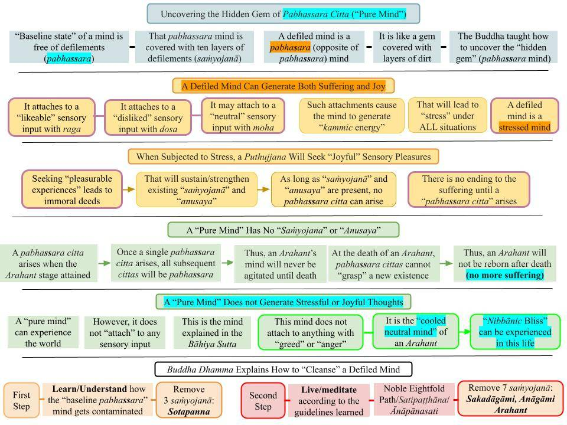

Suffering-free (pabhassara) mind is the baseline state of mind for all. It is covered with layers of dirt (defilements of rāga, dosa, and moha), but they can be removed, and the 'pure mind' can be recovered.
August 5, 2023; last revised June 27, 2025

Download/Print: "B1. Uncovering the Hidden Gem of Nibbāna."
Suffering-Free (Pabhassara) Mind
1. The baseline state of the mind of any sentient being is pure and incapable of generating rāga, dosa, and moha.
- The Buddha used several gauges to quantify the "level of contamination" of a defiled mind. The common ones are saṃyojanā, anusaya, āsava, and gati; we will focus on saṃyojanā since it is easier to visualize.
- Saṃyojanās are ten "mental bonds" that bind a mind to the rebirth process (saṁsāra.) These "mental bonds" are formed with rāga, dosa, and moha (simplistically translated as greed, anger, and ignorance.) See "Dasa Samyōjana – Bonds in Rebirth Process."
- Such a defiled mind can generate only pabhasara cittas (pabhasara is the opposite of pabhassara,) where cittas as commonly translated as "thoughts."
2. In the previous post, "True Happiness Is the Absence of Suffering," I pointed out three critical points:
- A pabhassara (with two s's) citta is a "pure citta" not subjected to the rebirth process, but a pabhasara (with only one "s") citta does perpetuate the rebirth process. Attaining the Arahant stage means the mind will start generating only pabhassara cittas.
- A pure, undefiled mind that generates only pabhassara citta, i.e., a "pure citta," is hidden deep inside a defiled mind. It remains hidden due to avijjā, anusaya, saṃyojanā, gati, etc.
- The Buddha showed how to stop that contamination. That leads to a stress-free mind during this life itself; furthermore, it stops the rebirth process, eliminating even a trace of future suffering.
A Defiled Mind (Pabhasara) Can Generate Suffering and Joy
3. A defiled mind will generate pabhasara (defiled) cittās at varying degrees depending on the sensory input (ārammaṇa.)
- A "mind-pleasing" ārammaṇa will lead to the rising of rāga and moha. A "disliked" ārammaṇa leads to the rising of dosa and moha. A "neutral" ārammaṇa may lead to the rising citta contaminated with only moha.
- Furthermore, an uncontaminated pabhassara citta will NEVER manifest for anyone below the Arahant stage.
- Anyone below the Arahant stage has a mind associated with a number of saṃyojanā (mental bonds) still intact: a puthujjana would have ten, a Sotapanna/Sakadāgāmi seven, and an Anāgāmi five.
4. An average person (puthujjana) becomes joyful when encountering "mind-pleasing" ārammaṇa but becomes distraught/distressed with "disliked" ārammaṇa. They may get confused with a "neutral" ārammaṇa.
- Any "pleasurable experience" will eventually end, and that will lead to distress. In addition, a "disliked" ārammaṇa will cause distress too.
- When distressed, a puthujjana would seek refuge in "pleasurable activities" to overcome the distress. That is the only way they know of "relieving stress."
- We discussed that in #2 of the previous post: "True Happiness Is the Absence of Suffering."
A Defiled Mind Wanders Among the 31 Realms
5. As we know, a lifestream wanders among the 31 realms: "What Reincarnates? – Concept of a Lifestream." Out of those 31, 11 are in "kāma loka," 16 are in rupavacara Brahma loka and 4 in arupavacara Brahma loka. The latter 20 are collectively in "Brahma loka."
- Joyful vedanās are sukha/somanassa vedanā that may arise either as "sāmisa or sensual pleasures in kāma loka" or as "nirāmisa or jhānic pleasures in Brahma loka."
- Stressful/painful vedanās are dukha/domanassa vedanā arising in the realms of kāma loka.
- Details in "Three Kinds of Happiness – What is Niramisa Sukha?" and "Nirāmisa Sukha."
6. Thus, in the realms of kāma loka, both sukha/somanassa and dukha/domanassa vedanā can arise. In the six Deva realms, mostly sukha/somanassa vedanā arise. In the human realm, both types can arise. However, most beings in the kāma loka are in the apāyās, where mostly dukha/domanassa vedanā arise.
- Even though lives in the six Deva realms and the Brahma realms are relatively free of dukha/domanassa vedanā, rebirth in the apāyās is inevitable after that. All existences have finite lifetimes.
- Thus, pain/suffering is inevitable (for long stretches of time) in the rebirth process.
- A given lifestream moves back and forth among the "good and bad" realms, subjected to "unbearable suffering" while in the apāyās.
Suffering Dominates the Rebirth Process
7. We cannot assess the level of suffering in the rebirth process by "human standards." Humans experience both sukha and dukha. Even if someone is currently experiencing dukha, their mindset is, "I will be able to overcome this situation and be happy again."
- Such a "positive mindset" is extreme in the Deva realms: there is little suffering to be seen or experienced until the end of that lifetime. Devās don't worry at all about suffering.
- The same is true of the Brahmās, who experience mostly "jhānic sukha" throughout their lifetime.
- However, once the true nature of the apāyās is understood, one would be willing to trade the joys of millions of years in a Deva or a Brahma realm for not being subject to suffering in an apāya, even for a short time!
8. Imagine the worst suffering you encountered during this life. Now, think about being continuously subjected to even worse suffering for millions of years. That is what happens in an apāya.
- The animal realm is the best of the four apāyās. Think about the suffering of animals in the wild; they are eaten alive. Even though their lifetimes are short, they keep being reborn as the same animal for millions of years until released from that particular existence (bhava.)
- The Buddha has described the unimaginable suffering of the apāyās in several suttās. However, it is succinctly summarized in the Sattisata Sutta.
Sattisata Sutta - Take the Offer of Torture for a Hundred Years for Nibbāna
9. The "Sattisata Sutta (SN 56.35)" provides a good idea of the suffering in the rebirth process.
- In that sutta, the Buddha says: "Bhikkhus, suppose there was a man with a lifespan of a hundred years. Suppose the following promise is given to that man: " Each day in your life (for the hundred years), you will be stricken with a hundred spears in the morning, at midday, and in the late afternoon. But after a hundred years have passed, you will comprehend the four Noble Truths." The Buddha told the Bhikkhus that the man should accept that offer, for the suffering to be experienced without comprehending the Noble Truths (i.e., not getting to Nibbāna) will be unimaginably worse."
- Therefore, it will be a small sacrifice to try to spend the rest of this life trying to comprehend the Noble Truths!
10. As I tried to point out in many posts, any "pleasurable existence" (in human, Deva, and Brahma realms) is mind-made: All births (jāti) arise via kammic energies accumulated via the Paṭicca Samuppāda (PS) process (via puññābhisaṅkhāra due to ignorance). They all have finite lifetimes.
- The same indeed holds for births in the apāyās; they also arise via the PS process via apuññābhisaṅkhāra due to ignorance and will come to an end once the kammic energy runs out.
- But the problem is that bearing the suffering in an apāya -- even for a short time -- cannot be balanced even if one gets MUCH LONGER times in a "good realm," as pointed out in #9 above. To make matters worse, births in a "good realm" are extremely difficult to obtain.
Any Pleasure Is Countered by Much More Suffering in the Rebirth Process
11. Joyful thoughts arise (mind becomes joyful) when attaching to a "pleasurable sense input" with rāga. Stressful thoughts arise with "distasteful sense inputs" that trigger dosa.
- We attach to external sense objects with mind-made kāmaguṇa that we attribute to them. That is the root cause of suffering. See "Kāma Guṇa – Origin of Attachment (Tanhā)."
- Furthermore, even when a defiled mind may not attach to a sense input, the neutral (adukkhamasukha) vedanā experienced still has a subtle "agitation" associated. This is typically not noticeable by puthujjana but can increasingly be experienced by those on the Noble Path (i.e., above the Sotapanna stage.) That "agitation of mind" rises due to moha or ignorance.
A Purified Mind (Pabhassara) Cannot Generate Pain or Joy
12. In a pure mind, rāga, dosa, or moha cannot arise, i.e., pabhassara cittas are devoid of rāga, dosa, and moha.
- Pabhassara cittas generated by a purified mind can not generate either joyful or stressful thoughts. It only experiences the world as it is without getting attached to the world with rāga, dosa, or moha.
- That is the key message of the Buddha. The ascetic Bāhiya understood that whole concept with just a few verses starting with "diṭṭhe diṭṭhamattaṁ bhavissati, sute sutamattaṁ bhavissati,..”
- See, for example, #11 and #12 in "Seeing Is a Series of 'Snapshots.'” I need to write on the Bāhiya Sutta to explain it in detail.
- A pure mind of an Arahant generates only pabhassara cittas devoid of rāga, dosa, and moha. It is the ultimate "cooled down" state of the mind. See "Nibbāna – Is it Difficult to Understand?"
- (Of course, a living Arahant is still subjected to physical suffering experienced with the physical body; that suffering will also stop at the death of the Arahant. The "Nibbānadhātu Sutta (iti 44)" explains the difference between the mindset of a living Arahant (saupādisesā Nibbāna) and that an Arahant will not be reborn to experience any mindset upon death (anupādisesā Nibbāna.) At marker 4.3, the Buddha says, "Tassa idheva, bhikkhave, sabbavedayitāni anabhinanditāni sīti bhavissanti," or "(at anupādisesā Nibbāna) an Arahant will be "fully cooled down." That is the ultimate release from even a trace of suffering!) An ubhatovimutti Arahant can experience Anupādisesa Nibbāna (full Nibbāna) even during life.
A Puthujjana Depends on "Sensual Pleasures" to Overcome Distress/Suffering
13. When faced with a specific stressful/hurtful situation, an average person (puthujjana) needs to figure out how to overcome that situation. The "standard response" of a puthujjana is to seek solutions from the external, material world. We discussed that in #2 of the previous post: "True Happiness Is the Absence of Suffering."
Let us consider some more examples.
- If we get sick, we need to visit a physician, and they will prescribe medication. When we get hungry, we must find food, and if we are thirsty, we must find water. When a boyfriend or girlfriend breaks up, they will likely seek another. The death of a loved one will lead to a depressed mind.
- Many such situations lead to "mental suffering," and the standard solutions vary from taking aspirin to seeking psychiatric help. In some extreme cases, the burden becomes unbearable and leads to suicide.
- It's an excellent idea to contemplate that. Aren't our lives constantly moving back and forth between pleasure and pain? We will NEVER be able to maintain any "pleasurable experience" or avoid "painful/stressful" situations.
- It is essential to grasp the following primary message of the Buddha.
"Pleasure Seeking" Moves One Away from "Real Happiness" with Pabhassara Citta
14. The "pure mind" (that automatically generates pabhassara cittās) is ALWAYS within us, hidden. Efforts to "seek happiness from the external world" keep it hidden. All we need to do is to understand that critical point and follow Buddha's instructions to cleanse our defiled minds and uncover the "hidden gem."
- True happiness has ALWAYS been with us, hidden. We have been looking for happiness in "things" in the external world. All we need to do is to cleanse our minds to recover the "hidden gem" of the "pure mind" that generates only pabhassara citta.
- Understanding the above is the only requirement to become a Sotapanna Anugāmi.
- Once that "new vision" is fully confirmed via comprehending Paṭicca Samuppāda and Tilakkhana, that understanding will be complete, i.e., one becomes a Sotapanna. That "change of worldview" is enough to break the first three saṁsāric bonds or saṃyojanās and to get to lokuttara Sammā Diṭṭhi.
- A Sotapanna can then begin following the Noble Eightfold Path, starting with the newly gained lokuttara Sammā Diṭṭhi. At this point, one needs to fully engage in formal meditation (Satipaṭṭhāna/Ānāpānasati) to break the remaining seven saṃyojanās.
- However, as discussed in "What is Unique in Buddha Dhamma?" there is a mundane eightfold path with "mundane versions" that must be completed first, especially to eliminate the ten wrong views; see #4 and #5 of that post.
All Minds Have the "Pabhassara Mind" Deeply Embedded
15. At the core of all minds (including those in the apayas) is the "pabhassara mind," but it is covered by ten layers of sansāric bonds (saṁyojana.)
- Furthermore, in any realm in this world, a mind falls first on the kama dhātu, rupa dhātu, or arupa dhātu. Each has its associated "distorted saññā," and a mind WILL attach to it. The only exception is when all ten saṁyojana have been broken, i.e., when one has become an Arahant.
- Once attached to that "distorted saññā," the mind falls into the "ajjhatta viññāṇa state" and starts contaminating rapidly in the "nava kamma" stage. If it reaches the "purāṇa kamma" stage, stronger kammic energies can be accumulated that can lead to future rebirths. This is explained in many posts since 8/5/2023 in “New / Revised Posts.”
- That "mind contamination process" is extremely fast, especially in the "nava kamma" stage. See "Paṇihitaacchavagga," where in #48, the Buddha states, “Bhikkhus, I do not see a single thing that’s as quick to change/evolve as the mind. So much so that it’s not easy to give a simile for how quickly the mind contaminates/evolves (upon receiving a sensory input).”
A mente livre do sofrimento (pabhassara) é o estado mental fundamental para todos. Ela está coberta por camadas de impurezas (as impurezas de Rāga, Dosa e Moha), mas essas podem ser removidas, e a “mente pura” pode ser recuperada.
5 de agosto de 2023; última revisão em 27 de junho de 2025
Baixar/Imprimir: “B1. Descobrindo a joia oculta do Nibbāna.”
Mente Livre do Sofrimento (Pabhassara)
1. O estado básico da mente de qualquer ser senciente é puro e incapaz de gerar Rāga, Dosa e Moha.
- O Buddha utilizou vários parâmetros para quantificar o “nível de contaminação” de uma mente impura. Os mais comuns são saṃyojanā, Anusaya, āsava e gati; vamos nos concentrar em saṃyojanā, pois é mais fácil de visualizar.
- Os saṃyojanās são dez “laços mentais” que prendem a mente ao processo de Renascimento (saṁsāra). Esses “laços mentais” são formados por Rāga, Dosa e Moha (traduzidos de forma simplificada como ganância, raiva e ignorância). Veja “Dasa Samyōjana – Laços no Processo de Renascimento”.
- Uma mente assim contaminada só pode gerar pabhasara cittas (pabhasara é o oposto de pabhassara), sendo que cittas são comumente traduzidos como “pensamentos”.
2. No ensaio anterior, “A verdadeira felicidade é a ausência de sofrimento”, apontei três pontos críticos:
- Um Citta pabhassara (com dois “s”) é um “Citta puro” não sujeito ao processo de Renascimento, mas um Citta pabhasara (com apenas um “s”) perpetua o processo de Renascimento. Alcançar o estágio de Arahant significa que a mente passará a gerar apenas cittas pabhassara.
- Uma mente pura e imaculada que gera apenas pabhassara citta, ou seja, um “citta puro”, está oculta nas profundezas de uma mente contaminada. Ela permanece oculta devido a Avijjā, Anusaya, saṃyojanā, gati, etc.
- O Buddha mostrou como interromper essa contaminação. Isso leva a uma mente livre de sofrimento já nesta vida; além disso, interrompe o processo de Renascimento, eliminando até mesmo qualquer vestígio de sofrimento futuro.
Uma Mente Impura (Pabhasara) Pode Gerar Sofrimento e Alegria
3. Uma mente impura gerará cittās pabhasara (impuras) em graus variados, dependendo do estímulo sensorial (Ārammaṇa).
- Um Ārammaṇa “agradável à mente” levará ao surgimento de Rāga e Moha. Um Ārammaṇa “desagradável” leva ao surgimento de Dosa e Moha. Um Ārammaṇa “neutro” pode levar ao surgimento de um Citta contaminado apenas por Moha.
- Além disso, um Citta pabhassara não contaminado NUNCA se manifestará para ninguém abaixo do estágio de Arahant.
- Qualquer pessoa abaixo do estágio de Arahant possui uma mente associada a uma série de saṃyojanā (laços mentais) ainda intactos: um Puthujjana teria dez, um Sotāpanna/Sakadāgāmi, sete, e um Anāgāmi, cinco.
4. Uma pessoa comum (Puthujjana) fica alegre ao se deparar com um Ārammaṇa “agradável à mente”, mas fica perturbada/angustiada com um Ārammaṇa “desagradável”. Ela pode ficar confusa diante de um Ārammaṇa “neutro”.
- Qualquer “experiência prazerosa” acabará eventualmente, e isso levará à angústia. Além disso, um Ārammaṇa “desagradável” também causará angústia.
- Quando angustiado, um Puthujjana buscaria refúgio em “atividades prazerosas” para superar a angústia. Essa é a única maneira que ele conhece de “aliviar o estresse”.
- Discutimos isso no ponto 2 do ensaio anterior: “A verdadeira felicidade é a ausência de sofrimento”.
Uma Mente Impura Vaga Pelos 31 Reinos
5. Como sabemos, um fluxo de vida vagueia pelos 31 reinos: “O que ocorre no processo de Renascimento? – O conceito de um fluxo de vida”. Desses 31, 11 estão no “Kāma Loka”, 16 no Brahma loka rupavacara e 4 no Brahma loka arupavacara. Os últimos 20 estão coletivamente no “Brahmā Loka”.
- As Vedanās alegres são Sukha/Somanassa Vedanā, que podem surgir tanto como “sāmisa, ou prazeres sensuais no Kāma Loka”, quanto como “nirāmisa, ou prazeres Jhāna no Brahmā Loka”.
- As Vedanās angustiantes/dolorosas são dukha/domanassa Vedanās que surgem nos reinos de Kāma Loka.
- Detalhes em “Três Tipos de Felicidade – O que é Niramisa Sukha?” e “Nirāmisa Sukha”.
6. Assim, nos reinos de Kāma Loka, tanto o sukha/somanassa quanto o dukha/domanassa Vedanā podem surgir. Nos seis reinos dos Devas, surgem principalmente o sukha/somanassa Vedanā. No reino humano, ambos os tipos podem surgir. No entanto, a maioria dos seres no Kāma Loka encontra-se nos apāyās, onde surgem principalmente Vedanās de dukha/domanassa.
- Embora as vidas nos seis reinos dos Devas e nos reinos de Brahmā sejam relativamente livres de Vedanā de dukha/domanassa, o renascimento nos apāyās é inevitável depois disso. Todas as existências têm duração finita.
- Assim, a dor/sofrimento é inevitável (por longos períodos de tempo) no processo de Renascimento.
- Uma determinada corrente de vida oscila entre os reinos “bons e maus”, sujeita a “sofrimento insuportável” enquanto permanece nos apāyās.
O sofrimento domina o processo de Renascimento
7. Não podemos avaliar o nível de sofrimento no processo de Renascimento por “padrões humanos”. Os humanos experimentam tanto Sukha quanto dukha. Mesmo que alguém esteja passando por dukha no momento, sua mentalidade é: “Vou conseguir superar essa situação e ser feliz novamente”.
- Essa “mentalidade positiva” é extrema nos reinos dos Devās: há pouco sofrimento a ser visto ou vivenciado até o fim daquela vida. Os Devās não se preocupam nem um pouco com o sofrimento.
- O mesmo se aplica aos Brahmās, que experimentam principalmente “Jhāna Sukha” ao longo de toda a sua vida.
- No entanto, uma vez compreendida a verdadeira natureza dos Apāyās, a pessoa estaria disposta a trocar as alegrias de milhões de anos em um reino dos Devās ou dos Brahmās por não estar sujeita ao sofrimento em um Apāya, mesmo que por um curto período!
8. Imagine o pior sofrimento que você enfrentou nesta vida. Agora, pense em estar continuamente sujeito a um sofrimento ainda pior por milhões de anos. É isso que acontece em um Apāya.
- O reino animal é o melhor dos quatro apāyās. Pense no sofrimento dos animais na natureza; eles são devorados vivos. Embora suas vidas sejam curtas, eles continuam renascendo como o mesmo animal por milhões de anos até serem libertados dessa existência específica (Bhava).
- O Buddha descreveu o sofrimento inimaginável dos apāyās em vários Suttās. No entanto, ele está resumido de forma sucinta no Sattisata Sutta.
Sattisata Sutta — Aceite a oferta de tortura por cem anos em troca do Nibbāna
9. O “Sattisata Sutta (SN 56.35)” oferece uma boa noção do sofrimento no processo de Renascimento.
- Nesse Sutta, o Buddha diz: “Bhikkhūs, suponham que houvesse um homem com uma expectativa de vida de cem anos. Suponha que a seguinte promessa seja feita a esse homem: ‘Todos os dias de sua vida (durante os cem anos), você será perfurado por cem lanças pela manhã, ao meio-dia e no final da tarde. Mas, após cem anos, você compreenderá as Quatro Nobres Verdades’.” O Buddha disse aos Bhikkhū que o homem deveria aceitar essa oferta, pois o sofrimento a ser vivenciado sem compreender as Nobres Verdades (ou seja, sem alcançar o Nibbāna) seria inimaginavelmente pior.”
- Portanto, será um pequeno sacrifício tentar passar o resto desta vida buscando compreender as Nobres Verdades!
10. Como tentei destacar em muitos ensaios, qualquer “existência prazerosa” (nos reinos humano, dos Devas e de Brahmā) é criada pela mente: Todos os nascimentos (Jāti) surgem por meio de energias Kamma acumuladas através do processo de Paṭicca Samuppāda (PS) (por meio de Puññābhisaṅkhāra devido à ignorância). Todos eles têm duração finita.
- O mesmo se aplica, de fato, aos nascimentos nos apāyās; eles também surgem por meio do processo PS, por meio do apuññābhisaṅkhāra devido à ignorância, e chegarão ao fim assim que a energia de Kamma se esgotar.
- Mas o problema é que suportar o sofrimento em um Apāya — mesmo que por um curto período — não pode ser compensado, mesmo que se obtenha períodos MUITO MAIS LONGOS em um “reino bom”, conforme apontado no item 9 acima. Para piorar a situação, os nascimentos em um “reino bom” são extremamente difíceis de se alcançar.
Qualquer Prazer é Contrabalançado por Muito Mais Sofrimento no Processo de Renascimento
11. Pensamentos alegres surgem (a mente se torna alegre) quando nos apegamos a um “estímulo sensorial prazeroso” com Rāga. Pensamentos angustiantes surgem com “estímulos sensoriais desagradáveis” que desencadeiam Dosa.
- Apegamo-nos a objetos sensoriais externos por meio do kāmaguṇa criado pela mente, que atribuímos a eles. Essa é a causa raiz do sofrimento. Veja “Kāma Guṇa – Origem do Apego (Tanhā)”.
- Além disso, mesmo quando uma mente contaminada não se apega a um estímulo sensorial, a Vedanā neutra (adukkhamasukha) experimentada ainda apresenta uma sutil “agitação” associada. Isso normalmente não é perceptível por um Puthujjana, mas pode ser vivenciado cada vez mais por aqueles que trilham o Nobre Caminho (ou seja, acima do estágio de Sotāpanna). Essa “agitação da mente” surge devido ao Moha, ou ignorância.
Uma Mente Purificada (Pabhassara) Não Pode Gerar Dor ou Alegria
12. Em uma mente pura, Rāga, Dosa ou Moha não podem surgir, ou seja, os Cittas pabhassara são desprovidos de Rāga, Dosa e Moha.
- Os Cittas pabhassara gerados por uma mente purificada não podem gerar pensamentos nem de alegria nem de sofrimento. Ela apenas experimenta o mundo como ele é, sem se apegar ao mundo com Rāga, Dosa ou Moha.
- Essa é a mensagem central do Buddha. O asceta Bāhiya compreendeu todo esse conceito com apenas alguns versos que começam com “diṭṭhe diṭṭhamattaṁ bhavissati, sute sutamattaṁ bhavissati,..”
- Veja, por exemplo, os números 11 e 12 em “Ver é uma série de ‘instantâneos’”. Preciso escrever sobre o Sutta de Bāhiya para explicar isso em detalhes.
- A mente pura de um Arahant gera apenas pabhassara cittas, desprovidas de Rāga, Dosa e Moha. É o estado supremo de “acalmia” da mente. Veja “Nibbāna – É difícil de entender?”.
- (É claro que um Arahant vivo ainda está sujeito ao sofrimento físico experimentado com o corpo físico; esse sofrimento também cessará com a morte do Arahant. O “Nibbānadhātu Sutta (iti 44)” explica a diferença entre o estado mental de um Arahant vivo (saupādisesā Nibbāna) e o fato de que um Arahant não renascerá para experimentar qualquer estado mental após a morte (anupādisesā Nibbāna). No marcador 4.3, o Buddha diz: “Tassa idheva, bhikkhave, sabbavedayitāni anabhinanditāni sīti bhavissanti”, ou “(no anupādisesā Nibbāna) um Arahant estará ‘totalmente apaziguado’.” Essa é a libertação definitiva até mesmo de um vestígio de sofrimento!) Um Arahant ubhatovimutti pode experimentar o Anupādisesa Nibbāna (Nibbāna completo) ainda durante a vida.
Um Puthujjana depende de “prazeres sensuais” para superar a angústia/sofrimento
13. Ao se deparar com uma situação específica de estresse ou dor, uma pessoa comum (Puthujjana) precisa descobrir como superar essa situação. A “resposta padrão” de um Puthujjana é buscar soluções no mundo externo e material. Discutimos isso no ponto 2 do ensaio anterior: “A verdadeira felicidade é a ausência de sofrimento”.
Vamos considerar mais alguns exemplos.
- Se ficarmos doentes, precisamos consultar um médico, que nos receitará medicamentos. Quando ficamos com fome, precisamos encontrar comida; e, se estivermos com sede, precisamos encontrar água. Quando um namorado ou namorada termina o relacionamento, provavelmente buscará outra pessoa. A morte de um ente querido levará a um estado de depressão.
- Muitas dessas situações levam ao “sofrimento mental”, e as soluções comuns variam desde tomar aspirina até procurar ajuda psiquiátrica. Em alguns casos extremos, o fardo se torna insuportável e leva ao suicídio.
- É uma excelente ideia refletir sobre isso. Nossas vidas não estão constantemente oscilando entre o prazer e a dor? NUNCA seremos capazes de manter qualquer “experiência prazerosa” ou evitar situações “dolorosas/estressantes”.
- É essencial compreender a seguinte mensagem fundamental do Buddha.
A “busca do prazer” afasta a pessoa da “felicidade verdadeira” com Pabhassara Citta
14. A “mente pura” (que gera automaticamente pabhassara cittās) está SEMPRE dentro de nós, oculta. Os esforços para “buscar a felicidade no mundo externo” a mantêm oculta. Tudo o que precisamos fazer é compreender esse ponto crucial e seguir as instruções do Buddha para purificar nossas mentes contaminadas e revelar a “joia oculta”.
- A verdadeira felicidade SEMPRE esteve conosco, oculta. Temos buscado a felicidade nas “coisas” do mundo externo. Tudo o que precisamos fazer é purificar nossas mentes para recuperar a “joia oculta” da “mente pura” que gera apenas pabhassara Citta.
- Compreender o exposto acima é o único requisito para se tornar um Sotāpanna Anugāmi.
- Assim que essa “nova visão” for plenamente confirmada por meio da compreensão de Paṭicca Samuppāda e Tilakkhaṇa, essa compreensão estará completa, ou seja, a pessoa se torna um Sotāpanna. Essa “mudança de visão de mundo” é suficiente para romper os três primeiros laços samsáricos, ou saṃyojanās, e alcançar o Lokuttara Sammā Diṭṭhi.
- Um Sotāpanna pode então começar a seguir o Nobre Caminho Óctuplo, partindo do recém-adquirido Lokuttara Sammā Diṭṭhi. Nesse ponto, é preciso se dedicar plenamente à meditação formal (Satipaṭṭhāna/Ānāpānasati) para romper os sete saṃyojanās restantes.
- No entanto, conforme discutido em “O que há de único no Buddha Dhamma?”, existe um Caminho Óctuplo mundano com “versões mundanas” que devem ser concluídas primeiro, especialmente para eliminar as dez visões errôneas; veja os itens 4 e 5 daquele ensaio.
Todas as Mentes Têm a “Mente Pabhassara” Profundamente Enraizada
15. No âmago de todas as mentes (incluindo as dos Apāyā) está a “mente pabhassara”, mas ela está coberta por dez camadas de laços samsáricos (saṁyojana).
- Além disso, em qualquer reino deste mundo, uma mente recai primeiro no kama Dhātu, no Rūpa Dhātu ou no arupa Dhātu. Cada um tem sua “Saññā distorcida” associada, e a mente IRÁ se apegar a ela. A única exceção ocorre quando todos os dez saṁyojana foram rompidos, ou seja, quando alguém se tornou um Arahant.
- Uma vez ligada a essa “Saññā distorcida”, a mente cai no “estado de ajjhatta Viññāṇa” e começa a se contaminar rapidamente no estágio do “nava Kamma”. Se atingir o estágio “purāṇa kamma”, energias Kamma mais fortes podem ser acumuladas, o que pode levar a renascimentos futuros. Isso é explicado em muitos ensaios desde 5/8/2023 em “Ensaios Novos / Revisados”.
- Esse “processo de contaminação da mente” é extremamente rápido, especialmente no estágio “nava Kamma”. Veja “Paṇihitaacchavagga”, onde, no nº 48, o Buddha afirma: “Bhikkhū, não vejo nada que mude ou evolua tão rapidamente quanto a mente. Tanto é assim que não é fácil dar uma comparação para ilustrar a rapidez com que a mente se contamina/evolui (ao receber um estímulo sensorial).”